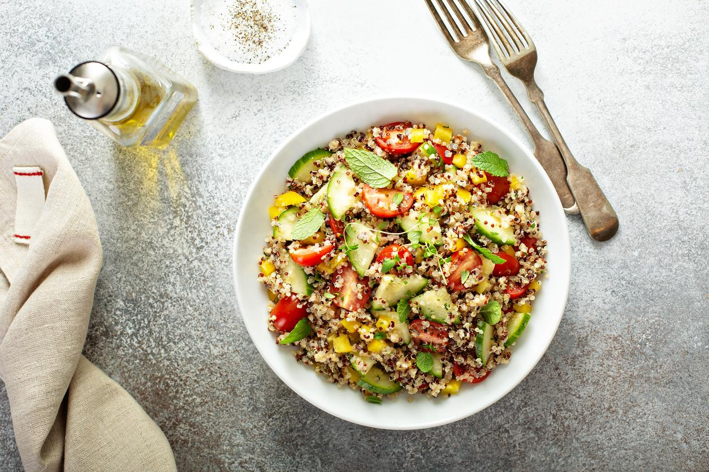

Ensalada de Quinoa y Aguacate
Fresca, colorida y ¡súper saludable!

Nuestra creación favorita
¡Hola! Somos Ali y Judith. Esta ensalada es el resultado de nuestras dos formas de ver la cocina. Mamá (Ali) quería algo súper sano y nutritivo con quinoa. Yo (Judith) quería que fuera divertido, con mucho color y un toque dulce. ¿La solución? ¡Añadir mango y un aderezo especial! Es la prueba de que cuando trabajamos juntas, ¡el resultado es el doble de bueno y el doble de rico!
Ingredientes
Para la ensalada:
- 200g de quinoa
- 1 aguacate grande, en su punto
- 1 mango maduro pero firme
- 1 pimiento rojo
- 1/2 pepino
- 1/2 cebolla morada
- Un manojo de cilantro fresco picado
Para el aderezo especial:
- 4 cucharadas de aceite de oliva virgen extra
- El zumo de 2 limas
- 1 cucharada de miel (o sirope de arce)
- Sal y pimienta negra al gusto
Paso a Paso
- Cocina la quinoa: Lava bien la quinoa bajo el grifo. Cuécela siguiendo las instrucciones del paquete (normalmente, una parte de quinoa por dos de agua durante unos 15 minutos). Una vez cocida, déjala enfriar completamente.
- Prepara los colores: Mientras la quinoa se enfría, pica el pimiento rojo, el pepino y la cebolla morada en dados muy pequeños. Pela y corta el mango también en dados.
- El aderezo mágico: En un tarro pequeño con tapa, pon el aceite de oliva, el zumo de las limas, la miel, la sal y la pimienta. Cierra el tarro y agítalo con mucha energía hasta que todo se mezcle bien. ¡Este es el paso favorito de Judith!
- Monta la ensalada: En un bol grande, mezcla la quinoa ya fría con todas las verduras picadas, el mango y el cilantro.
- El toque final: Justo antes de servir, pela y corta el aguacate en dados y añádelo a la ensalada. Vierte el aderezo por encima y mezcla todo con suavidad para no romper el aguacate.
- ¡A disfrutar!: Sírvela inmediatamente. ¡Está llena de sabor y frescura!
El Secreto de las Dos
Ali dice: "Para que la quinoa quede perfecta, asegúrate de que esté completamente fría antes de mezclarla. Así no se apelmazará".
Judith dice: "Si quieres que sea aún más guay, ¡añade unos granos de granada! Le dan un color increíble y explotan en la boca. ¡Es súper divertido!".